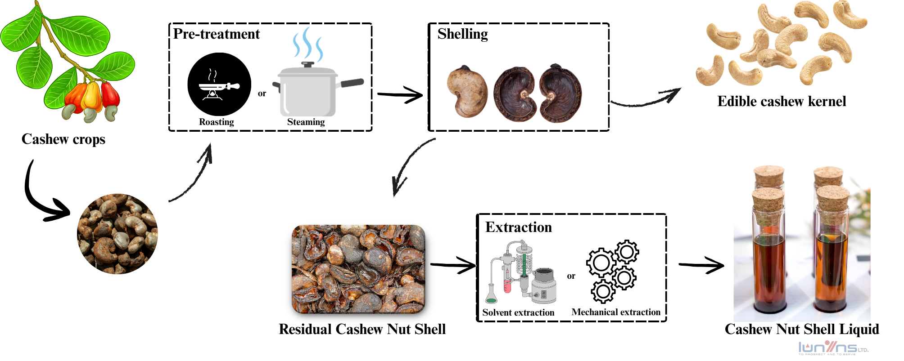

CNSL
Cashew Nuts Shell Liquid
CNSL is rich in phenolic compounds, mainly:
Degummed Cashew Nut Shell Liquid (CNSL)
We supply Degummed Cashew Nut Shell Liquid (CNSL) directly from a Vietnam-based manufacturer with a monthly production capacity of 5,000 MT (Metric Tons).
This bio-based industrial oil is derived from cashew nut shells, offering a renewable alternative to petroleum-based phenolic compounds used in the resins, coatings, friction, and polymer industries.
Our degumming process removes gums, phospholipids, and polar impurities from the crude CNSL, resulting in a high-purity, stable, and consistent feedstock suitable for technical and chemical applications.
Key Specifications:
The product is ISCC-EU certified, ensuring full compliance with international sustainability and traceability standards.
Smaller trial batches are available for formulation development, pilot testing, and quality assessment.
Contact us to request a quotation, technical data sheet (TDS), or product sample.
